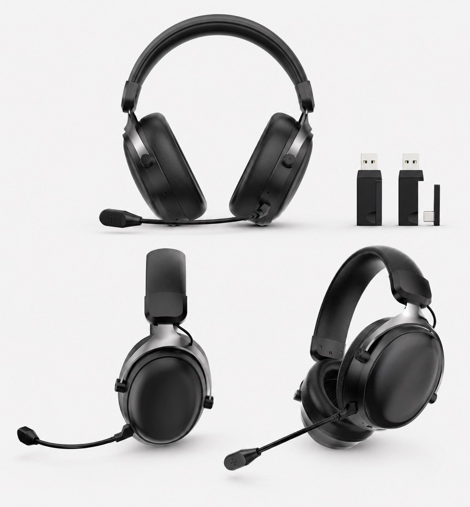

Send the product photos
If the buyer has a reference image, send clear front, side, microphone, receiver or cable, control and packaging photos for comparison discussion.

Gaming headset model codes
This TALRIVO G-Series index helps buyers compare real gaming headset model pages before choosing samples. Each model code links to an existing product page with images, confirmed direction, buyer questions and a practical RFQ path.

Buyer note
Model-code searches are common in headset sourcing, but a code alone is not enough to approve a supplier or sample. The code should lead to the right TALRIVO page, then the physical sample, connection setup, microphone structure, accessories and packaging details still need review.
Model-code index
Each G-Series model and connection version has its own page. Some image-only references still need specification confirmation before sample approval.
| Model code | Product direction | Available review details | Best next step |
|---|---|---|---|
| G941 wireless | Tri-Mode ANC Gaming Headset | 2.4G, Bluetooth and wired direction; 50 mm driver; 1000 mAh battery listed; About 50 hours with lights off; selected version to confirm | Review this version |
| G940 wireless | Low-Latency Wireless Gaming Headset | Documented dual-driver acoustic direction; 500 mAh battery; about 20 hours listed with lights off; About 20 ms 2.4G latency and RGB accents | Review this version |
| G942 wireless | 2.4G Wireless Gaming Headset | Supplied images and listed version-specific data. | Review this version |
| G923 wireless | Wireless Gaming Headset | Supplied images and listed version-specific data. | Review this version |
| G920 wireless | Wireless Gaming Headset | Supplied images and listed version-specific data. | Review this version |
| G936 wireless | Wireless Gaming Headset | Specification on request; Private-label discussion; Video candidate available | Review this version |
| G939 wireless | White Wireless Gaming Headset | 50 mm driver; 2.4GHz USB receiver; 1000 mAh battery; up to 50 hours listed with lights off. See six supplied graphics and device connection notes. | Review this version |
| G927 wireless | Wireless Gaming Headset | Supplied images and listed version-specific data. | Review this version |
| G926 wireless | Wireless Gaming Headset | Wireless direction; 50 mm driver direction; OEM discussion available | Review this version |
| G921 wireless | Wireless Gaming Headset | Images available; specification confirmation pending. | Review this version |
| G919 wireless | Wireless Gaming Headset | Images available; specification confirmation pending. | Review this version |
| G938 wireless | Wireless Gaming Headset | 2.4G, Bluetooth and wired direction; 53 mm driver; 1000 mAh battery listed; About 50 hours with lights off; selected version to confirm | Review this version |
| G935 wireless | Wireless Gaming Headset | 40 mm driver; 500 mAh battery listed; About 25 hours with lights off; About 20 ms 2.4G latency and detachable microphone | Review this version |
| G946 wireless | Tri-Mode RGB Gaming Headset | 2.4G, Bluetooth and wired direction; 50 mm driver and detachable microphone; RGB charging dock direction with USB hub | Review this version |
| G947 wireless | Tri-Mode Gaming Headset | 2.4G, Bluetooth and wired direction; 50 mm driver and detachable microphone; Anodized aluminum frame with extendable arm | Review this version |
| G942 wired | RGB Wired Gaming Headset | Supplied images and listed version-specific data. | Review this version |
| G935 wired | RGB Wired Gaming Headset | Supplied images and listed version-specific data. | Review this version |
| G936 wired | RGB Wired Gaming Headset | Supplied images and listed version-specific data. | Review this version |
| G939 wired | RGB Wired Gaming Headset | Supplied images and listed version-specific data. | Review this version |
| G923 wired | RGB Wired Gaming Headset | Supplied images and listed version-specific data. | Review this version |
| G941 wired | Wired Gaming Visual Candidate | Images available; specification confirmation pending. | Review this version |
| G920 wired | Wired Gaming Headset | Images available; specification confirmation pending. | Review this version |
| G926 wired | Wired Gaming Headset | Images available; specification confirmation pending. | Review this version |
| G921 wired | Wired Gaming Headset | Supplied images and listed version-specific data. | Review this version |
| G919 wired | Wired Gaming Headset | Supplied images and listed version-specific data. | Review this version |
| G909 wired | Wired Gaming Headset | Images available; specification confirmation pending. | Review this version |
Search clarification
Different suppliers may use similar codes, photos or platform descriptions. A professional check should avoid assumptions and compare the actual sample.
If the buyer has a reference image, send clear front, side, microphone, receiver or cable, control and packaging photos for comparison discussion.
For wireless headsets, list the intended PC, console, mobile or mixed-device use before comparing 2.4G, Bluetooth or wired routes.
Compare headband shape, cushion material, microphone layout, hinge or fork arm, control placement and accessory set.
The selected sample should confirm connection setup, audio and microphone behavior, packaging, manual language and document needs.
Sample workflow
FAQ
A model code is a practical reference used to identify a headset direction during sample discussion. It should be checked together with product images, connection route, microphone structure, accessories, packaging and the selected sample version.
No. This directory does not identify the original manufacturer of any external brand product. It lists TALRIVO model pages that buyers can use for sample review, model comparison and RFQ preparation.
Start with G938 and G941 for tri-mode wireless directions, G926 and G935 for 2.4G wireless shortlist review, G936 for lightweight fabric-cushion review, and G940 when a low-latency wireless direction is part of the comparison.
Send the model code, target market, sales channel, target devices, connection direction, quantity range, sample timing, branding needs, packaging questions and any photos or documents that must be matched during sample review.
Share the model code, target market, target devices, sales channel, quantity range, branding needs and sample timing so TALRIVO can point you to the right product page and sample review path.